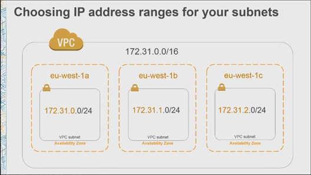

Notes from initial research on VPC
Amazon Virtual Private Cloud
EC2
In 2006 Amazon EC2 was launched.
- 1 Public IP adddress(/Elastic IP)
- DNS hostname
- Security Group Ingress Filtering
Later they also provided
- Private IP addresses
- Internal DNS hostname to each instance
In 2009 Amazon VPC was launched.
In 2011 marked enhancements to EC2.
- Security Group now provided ingress and egress filtering
- Direct Internet connectivity
- Routing Tables
- Network ACLS to controll traffic between subnets
The same year also saw updates to VPC.
- Multiple IP addresses
- Multiple network interfaces
- Dedicated instances
- Statically Routed VPN connections
March 2013 saw the launch of default VPC to EC2.
- Automatically provisioned VPC were called default VPC
- DNS Hostnames
- DNS name resolution
- ElasticCache
- RDS IP Addresses
VPC
Notes from the AWS ReInvent video
Subnet
- Create a subnet in all availability zones(AZ) in a region
- For example: 
- Multiple subnets in each AZ
- Enable auto assignment of public ip address to any EC2 instance launched in the VPC
Route
- Each VPC comes with a default Routing Table (RIB)
- Assign different Routing Tables to each subnet
- Default Route Table has one rule
172.31.0.0/16 local activewhich means that connections from EC2 instances in the VPC are routed locally.
Internet Gateway
- An Internet Gateway is a resource you can create an attached to your VPC
- “A thing you send packets to if you want them to go to the internet”
- In your Route Table create a rule as shown:
0.0.0.0/0 igw-3376c756 - In a Route Table the more specific rule that can be applied dominates
- “Q: What is an Internet Gateway? Is it a router, a thing within the Amazon Data Center? Is it a single point of failure? A: It is a thing. It’s a highly available lots of things that gets traffic from the internet to your VPC. It’s an abstraction that just works.”
Authorizing Traffic: Network ACLs Security Groups
Network ACLs
- In a traditional network, Network ACLs are analogous to stateless firewall rules.
- The rules in a network acl gets applied in the order specified, ex. 100 (Rule #) All Traffic(Type) All (Protocol) All(Port) 0.0.0.0/0 (Port Range) Allow (Allow\Deny)
- You can transfer rules from your network firewall to network acls
Security Groups
- Architect your security groups the way you architect your applications
- For example you have instances that act as web servers and instances that function as your backend applications/database servers.
- You would want internet traffic to be available to your web servers but not to your backend instances.
- Your backend instances should only allow connections from your web server instances.
Example Rule:
For the web server instances
Type Protocol Port Source
HTTP(80) TCP 80 0.0.0.0/0
For the backend services
Type Protocol Port Source
Custom Rule TCP 2365 sg-123456
Note:
- You can reference another security group as source of this rule. In the above example sg-12345 is the security group applied to the webservers. In an elastic setup where you are adding and removing web server instances this rules applies to any instances that are assigned to the specified security group.
- Ingress (inbound), egress (outbound) rules can be defined
- Best Practice is to reference other security groups as show in the backend rule above.
- In practice there is a 1:1 relationship between an IAM role and a security group.
Connectivity Options for VPC (aside from just internet connections)
Three examples
- Subnet routing
- Connecting to other VPCs
- Connecting to your corporate network
Subnet Routing
- Private Subnet(Internal) - Subnet without connection to the internet
- Public Subnet(Internet connected) - Subnet with a connection to the internet
In the example given above you can put your web server instances and backend servers into different subnets. In one subnet you can have a route to the internet and the other subnet has no route to the internet. This allows you to be sure that your backend end instances will have no way of being accessible from the internet. It may happen that you may want to allow internet traffic to your backend servers. What you can then do is setup an EC2 instance on the internet connected subnet and have it function as a NAT (Network address translation). Then your backend subnet can have a route of 0.0.0.0/0 to your NAT EC2 instance which is on your public subnet. Instead of manually setting up your NAT EC2 instance, there is already a NAT AMI for that (amzn-ami-vpc-nat).
Connecting to other VPCs: VPC Peering
There are some scenarios which you may want to run multiple VPCs.
In a large corporate network you may want to give individual teams their own VPC. But you also have commone/core services (such as scanning, logging, monitoring, authentication) in which all teams would have access to.
- Initiate a peering request
- Accept a peering request
- Create routes from one to the other
Connecting to your network: AWS Hardware VPN, AWS Direct Connect
Extend your network to your VPC
- VPN
- Direct Connect
VPN
A VPN consists of a Customer Gateway which is a network device on one end of the VPN connection and a Virtual Gateway on the VPC side of the VPN connection.
Once you have these setup you get a pair of IPSEC tunnels.
On your VPC create a route to your Corporate Data Center.
Direct Connect
A dedicated line with lower per GB data transfer rates For highest availability use both
DNS in a VPC
In your VPC settings:
- DNS resolution: yes
- DNS hostnames: yes
Note: When set to yes, your VPC uses Amazon DNS servers
EC2 instances in a VPC using Amazon DNS gets two hostnames:
- Internet DNS hostname
ip-12345which resolves to your instances private ip address - External DNS name when access from the internet resolves to the public ip and when accessed from within the VPC resolves to the private ip.
Amazon Route 53 can allow you to create private hosted zones Private hosted zone - your own world of dns in your VPC Basically you can create a private hosted zone assign it to your VPC and map a domain name to an ip address within your vpc.
VPC Flow Logs
Full meta data dump of all packets to your EC2 instances, not only the packets that succeed but also the packets your security groups are rejecting.
Amazon VPC Endpoints for S3
A wormhole from your VPC to your S3
Resources: